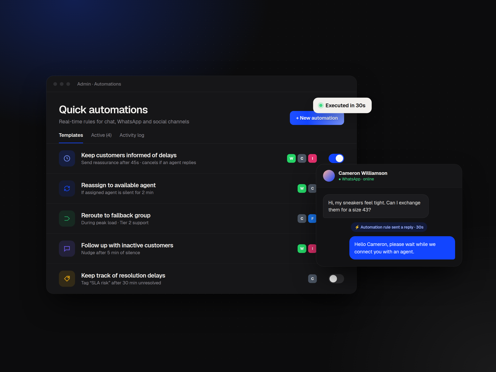

FIG. 01 · ADMIN / AUTOMATIONS01
Quick Automations
Real-time workflows for conversational support in Freshdesk Omni. Six guided templates replaced hourly triggers, running in as little as 30 seconds across WhatsApp, Web Chat and social DMs.
91%fewer dropped chats
$120Kattributed MRR
75%adoption on real-time channels
2025Freshworks · 0→1